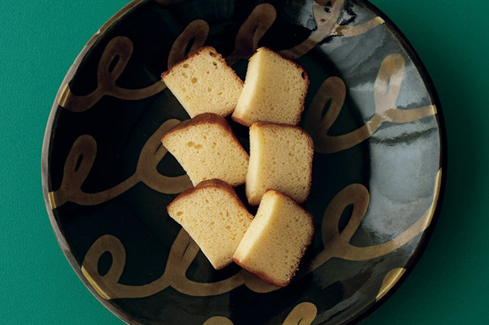
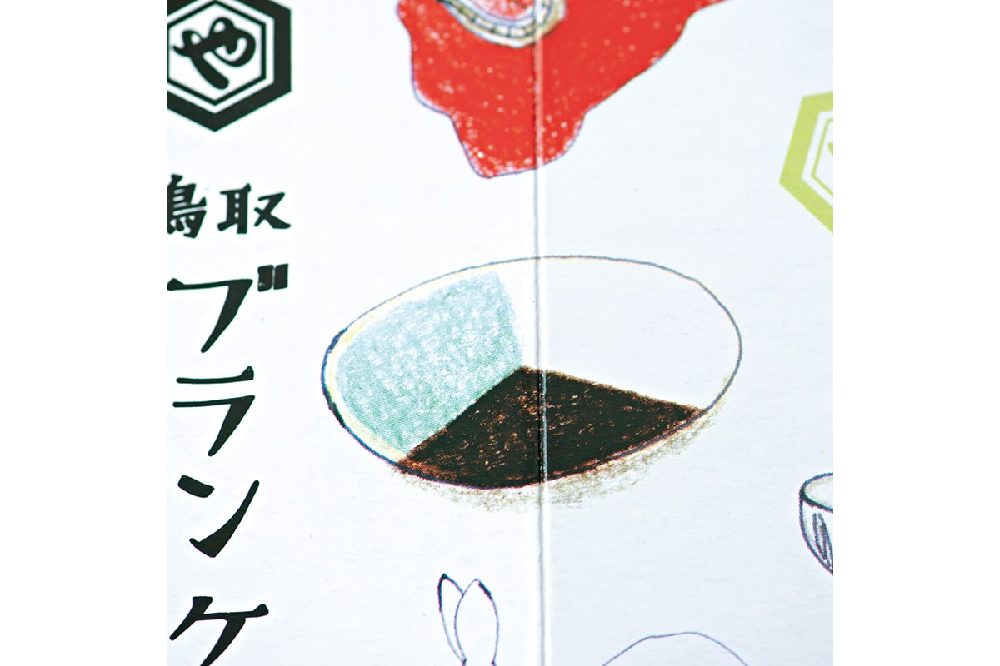
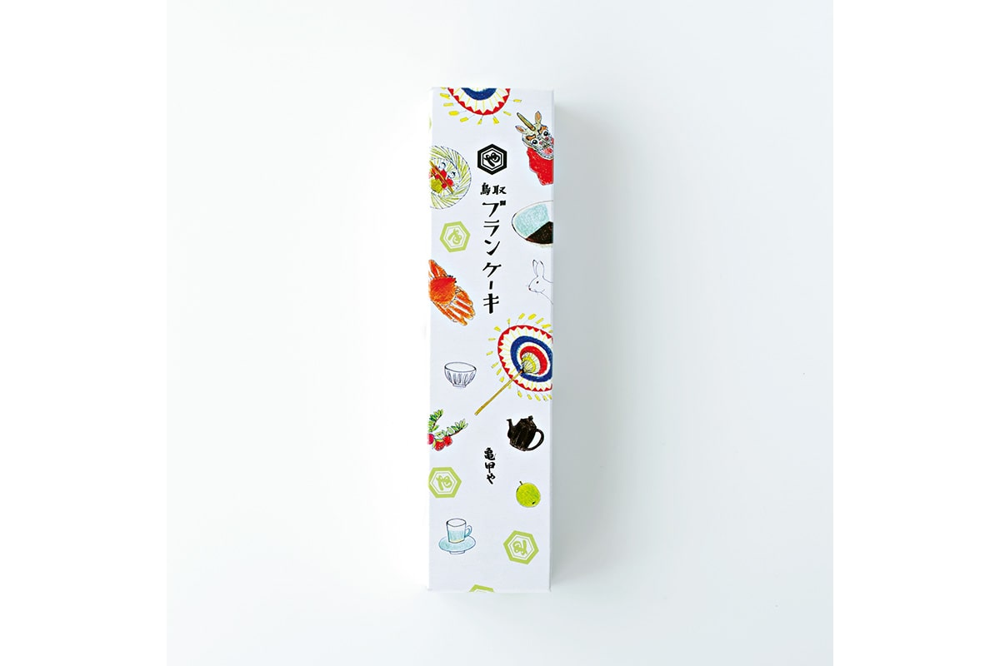
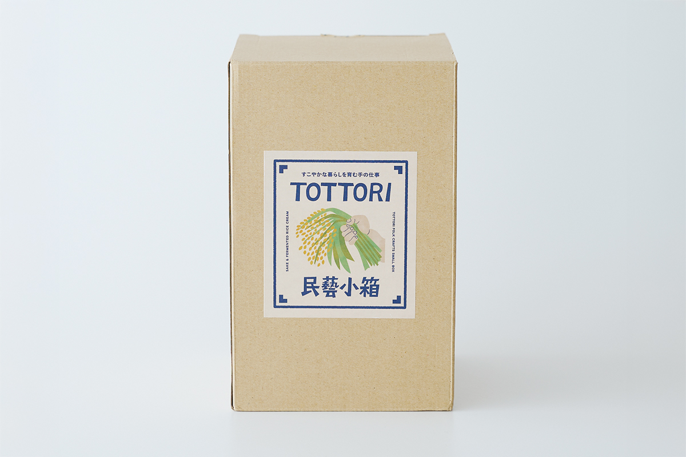
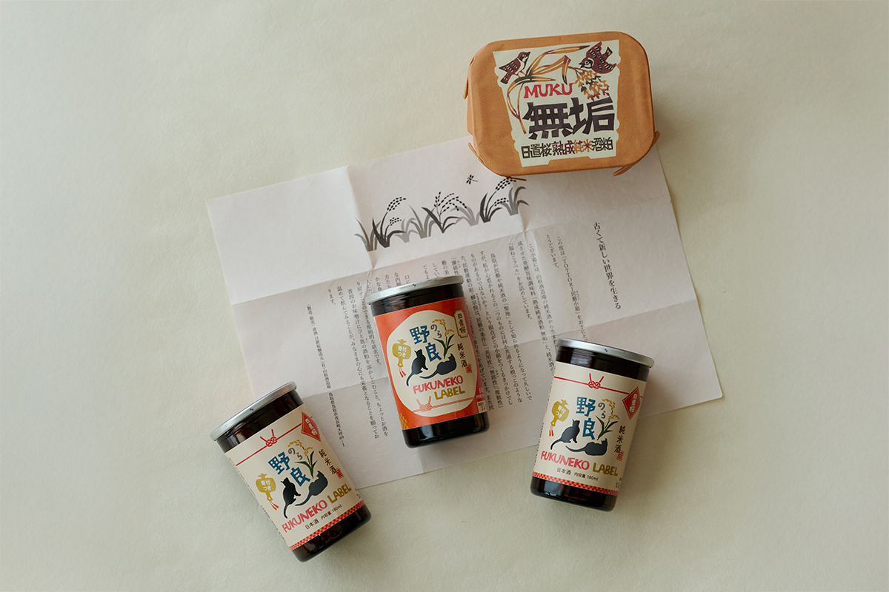
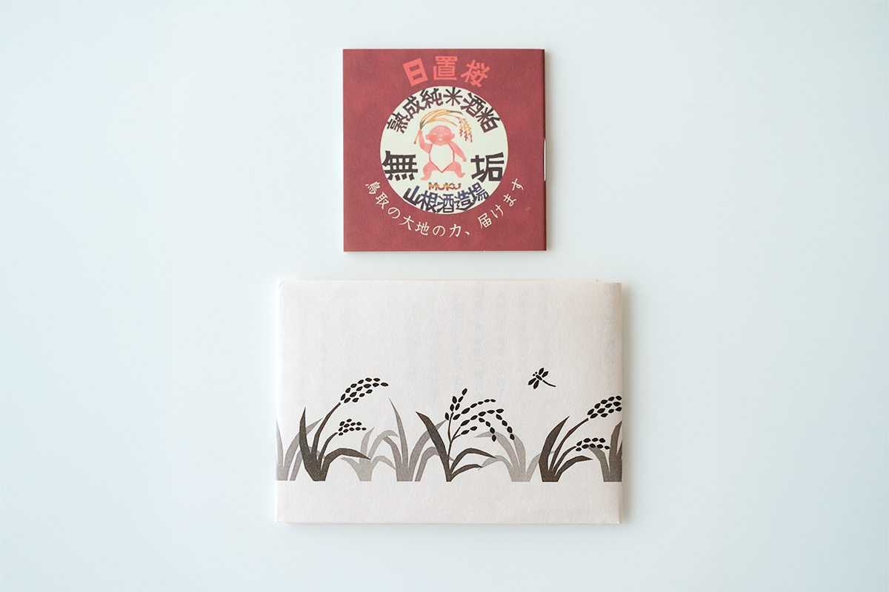

Префектура Тоттори · город Тоттори · сладости и сакэ
Мингэй к чаю: торт из «Киккоя» и подарочная коробка сакэ из Тоттори

Тоттори, самая малонаселённая префектура Японии, давно живёт идеями мингэй, движения за красоту простых вещей, сделанных руками. Эти идеи добрались даже до сладостей и сакэ: вот торт и подарочный набор, которые стоит привезти домой.
Мингэй
Город, где ремёсла кто-то направлял
Народные ремёсла в Тоттори любят давно, и в этом большая заслуга одного человека. Сёя Ёсида (1898–1972) родился в Тоттори, а позже его назвали «продюсером мингэй». Ещё в молодости он проникся идеями Мунэёси Янаги (1889–1961), философа, который вместе с тремя мастерами-керамистами в 1926 году опубликовал манифест о создании музея народного искусства. С этого документа и принято отсчитывать историю движения, так что в 2026 году мингэй исполняется сто лет.

В городе Тоттори Ёсида собрал коллекцию и открыл Музей народных ремёсел Тоттори, а рядом с ним ресторан «Такуми каппо» и магазин ремёсел «Такуми когэй». Чтобы мингэй прижился в родных местах, он учил местных мастеров и вместе с ними придумывал новые вещи: керамику, бумагу васи, блюда и даже сладости. Его следы до сих пор легко найти в самых неожиданных местах, например на коробке торта.
Сладости
Торт, который едят глазами
Кондитерская «Киккоя» известна в Тоттори прежде всего сладостью «Нидзиссэйки», сделанной в виде ломтика груши. Но в последние годы в подарок отсюда чаще везут другое: торт «Тоттори буран-кэки». У него тонкий вкус с ароматом алкоголя, а коробка расписана видами и приметами Тоттори.

Рисунок стоит рассмотреть внимательно. Среди белого зайца из Инаба, зонтиков фестиваля «Сян-сян» и танца льва сиси-маи спрятались вещи, к которым приложил руку сам Ёсида. Двухцветные тарелки, чашка и блюдце сделаны в мастерской Инсю Накаи-гама, коричневый гранёный чайник это керамика Фукумицу-яки, а бумажные куклы нагаси-бина взяты из народных игрушек. Исследовательница сладостей, которая много лет ищет связи между кондитерским делом и мингэй, советует: пока едите торт, полюбуйтесь и коробкой.
«Киккоя»
- Адрес
- префектура Тоттори, Тоттори, Катахара, 2-116
- Телефон
- +81 857-23-7021
- Часы работы
- 8:30–18:30, по воскресеньям и праздникам до 17:30
- Выходные
- 1 января
Сакэ
Коробка мингэй от завода «Ямане сюдзодзё»
Сакэ тоже может быть изделием мингэй. Так решили на заводе «Ямане сюдзодзё», которым пятое поколение одной семьи управляет в районе Аоя города Тоттори. Главная марка завода называется «Хиоки-дзакура». Экскурсий по заводу нет. Здесь рассудили, что сакэ и сакэ-касу, рисовая гуща после отжима, выражают характер своей земли так же, как керамика или бумага. Из этой мысли получился набор «Тоттори мингэй кобако», задуманный как подарок, в котором чувствуется Тоттори.

Сакэ с этикеткой «Фуку-нэко» делали с мыслью о стати, гибкости и живости напитка. Оно рассчитано на выдержку, и его вкус ещё будет раскрываться со временем. «Муку» это натуральная ферментированная приправа: гущу от чистого рисового сакэ дзюммай около полугода выдерживают, и она становится гладкой пастой.


«Ямане сюдзодзё»
- Адрес
- префектура Тоттори, Тоттори, Аоя, Оцубо, 249
- Телефон
- +81 857-85-0730
- Сайт
- hiokizakura.jp
Фото: Вакана Баба.